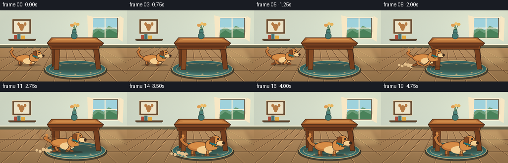
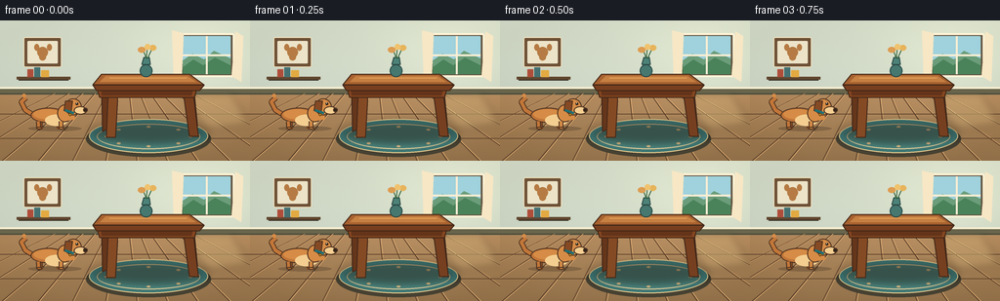

CODING AGENTS AS PIXEL WORLD MODELS
traex/GPT-5.6-Sol · dynamic_spatial_relationship_0000
点击播放 · 原生 RGB 像素
逐轮保存的候选
回放视频、检查图与代码变化。
每份候选均可单独播放。实际图片检查记录在下方工具轨迹中。
候选 01播放与检查图
点击播放 · 原生 RGB 像素

展开代码变化
--- 上一保存版本
+++ 本次保存版本
@@ -0,0 +1,290 @@
+from pathlib import Path
+import math
+import numpy as np
+from PIL import Image, ImageDraw, ImageFilter
+import artifact_io
+
+# Deterministic, hand-rendered animation (no input imagery or external assets).
+W, H, N, FPS = 256, 144, 20, 4.0
+S = 4
+rng = np.random.default_rng(11)
+
+
+def sc(v):
+ return int(round(v * S))
+
+
+def pts(seq):
+ return [(sc(x), sc(y)) for x, y in seq]
+
+
+def ellipse(d, box, fill, outline=None, width=1):
+ d.ellipse(tuple(sc(v) for v in box), fill=fill, outline=outline, width=sc(width) if outline else 1)
+
+
+def poly(d, xy, fill, outline=None, width=1):
+ p = pts(xy)
+ d.polygon(p, fill=fill)
+ if outline:
+ d.line(p + [p[0]], fill=outline, width=sc(width), joint='curve')
+
+
+def line(d, xy, fill, width=1, joint='curve'):
+ d.line(pts(xy), fill=fill, width=max(1, sc(width)), joint=joint)
+
+
+def rr(d, box, radius, fill, outline=None, width=1):
+ d.rounded_rectangle(tuple(sc(v) for v in box), radius=sc(radius), fill=fill,
+ outline=outline, width=sc(width) if outline else 1)
+
+
+def make_background():
+ hs, ws = H*S, W*S
+ yy, xx = np.mgrid[0:hs, 0:ws]
+ yf, xf = yy/S, xx/S
+ arr = np.zeros((hs, ws, 3), dtype=np.float32)
+ wall = yf < 72
+ # Warm mint wall with a very gentle natural-light gradient.
+ arr[..., 0] = np.where(wall, 211 - 0.11*yf, 177 - 0.34*(yf-72))
+ arr[..., 1] = np.where(wall, 220 - 0.08*yf, 139 - 0.23*(yf-72))
+ arr[..., 2] = np.where(wall, 202 - 0.05*yf, 96 - 0.16*(yf-72))
+ # Sunlight from the upper right and a subtle vignette.
+ glow = np.exp(-(((xf-218)/78)**2 + ((yf-30)/55)**2))
+ arr += glow[..., None] * np.array([18, 17, 12])
+ vig = ((xf-W/2)/(W/2))**2 + ((yf-H/2)/(H/2))**2
+ arr -= np.clip(vig[..., None] * 7, 0, 10)
+ noise = rng.normal(0, 0.75, (hs, ws, 1))
+ arr += noise
+ im = Image.fromarray(np.clip(arr, 0, 255).astype(np.uint8), 'RGB').convert('RGBA')
+ d = ImageDraw.Draw(im, 'RGBA')
+
+ # Baseboard and floor geometry.
+ poly(d, [(0,69),(256,69),(256,76),(0,76)], (105,103,79,255))
+ line(d, [(0,69),(256,69)], (243,238,210,255), 2)
+ line(d, [(0,75),(256,75)], (72,72,57,110), 1)
+ # Floor boards recede toward the horizon.
+ for xb in [-80,-38,2,39,74,108,140,171,202,235,278,325]:
+ x0 = 128 + (xb-128)*0.35
+ line(d, [(x0,75),(xb,144)], (89,64,43,90), .65)
+ line(d, [(x0+1,75),(xb+1.5,144)], (232,181,120,35), .5)
+ for y in [96,121]:
+ line(d, [(0,y),(256,y)], (91,65,43,70), .7)
+
+ # Window with depth and a soft outdoor scene.
+ rr(d, (183,13,240,58), 2, (101,91,72,255), (251,241,213,230), 2)
+ rr(d, (187,16,236,55), 1, (157,208,218,255))
+ # Window panes: sky, distant greenery and light curtains.
+ poly(d, [(187,41),(197,34),(209,40),(219,31),(236,39),(236,55),(187,55)], (107,157,123,255))
+ poly(d, [(187,48),(198,40),(208,46),(220,38),(236,46),(236,55),(187,55)], (75,130,91,255))
+ line(d, [(211.5,16),(211.5,55)], (245,236,210,255), 2)
+ line(d, [(187,35.5),(236,35.5)], (245,236,210,255), 2)
+ poly(d, [(176,10),(188,13),(186,59),(178,65)], (242,229,195,185))
+ poly(d, [(241,11),(249,16),(247,63),(237,57)], (242,229,195,180))
+
+ # A small framed dog-themed abstract print and shelf add domestic context.
+ rr(d, (24,17,63,48), 2, (109,83,57,255), (234,221,186,255), 1)
+ rr(d, (28,21,59,44), 1, (231,225,199,255))
+ ellipse(d, (38,27,49,38), (179,124,70,255))
+ ellipse(d, (35,24,40,31), (179,124,70,255))
+ ellipse(d, (48,24,53,31), (179,124,70,255))
+ ellipse(d, (40,34,47,41), (179,124,70,255))
+ line(d, [(17,59),(72,59)], (95,71,48,255), 3)
+ line(d, [(19,61),(70,61)], (55,48,39,90), 1)
+ # Books on the shelf.
+ rr(d, (28,50,34,58), .5, (171,80,60,255))
+ rr(d, (35,48,41,58), .5, (70,114,115,255))
+ rr(d, (42,51,50,58), .5, (222,169,68,255))
+
+ # Sun patch on the floor, softly blurred.
+ sun = Image.new('RGBA', im.size, (0,0,0,0)); sd = ImageDraw.Draw(sun, 'RGBA')
+ poly(sd, [(183,75),(237,75),(256,107),(212,112)], (255,231,157,38))
+ sun = sun.filter(ImageFilter.GaussianBlur(sc(4)))
+ im = Image.alpha_composite(im, sun)
+
+ # Rug grounds the destination in front of the table.
+ d = ImageDraw.Draw(im, 'RGBA')
+ ellipse(d, (88,103,216,140), (71,67,52,45))
+ ellipse(d, (91,101,213,136), (65,121,118,220), (229,202,142,180), 1)
+ ellipse(d, (99,106,205,132), (82,142,134,110), (243,219,163,90), 1)
+ for k in range(8):
+ ang = k * math.pi/4
+ cx, cy = 152 + 43*math.cos(ang), 119 + 10*math.sin(ang)
+ ellipse(d, (cx-2,cy-1,cx+2,cy+1), (232,204,147,100))
+ return im
+
+
+def draw_table(base):
+ # Soft table shadow.
+ sh = Image.new('RGBA', base.size, (0,0,0,0)); sd = ImageDraw.Draw(sh, 'RGBA')
+ ellipse(sd, (92,104,214,126), (33,29,22,80))
+ sh = sh.filter(ImageFilter.GaussianBlur(sc(4)))
+ base.alpha_composite(sh)
+ d = ImageDraw.Draw(base, 'RGBA')
+ # Rear legs, then apron/top, for believable depth.
+ poly(d, [(104,67),(113,67),(111,111),(105,114)], (101,56,30,255), (66,42,28,255), 1)
+ poly(d, [(190,66),(198,67),(202,108),(195,108)], (98,53,29,255), (64,40,27,255), 1)
+ # Front legs splay slightly toward the viewer.
+ poly(d, [(111,69),(121,69),(118,120),(109,120)], (131,76,39,255), (70,43,28,255), 1)
+ poly(d, [(187,69),(197,69),(203,119),(194,119)], (117,65,34,255), (65,41,27,255), 1)
+ # Warm wooden apron.
+ poly(d, [(98,64),(203,64),(199,79),(102,79)], (132,72,35,255), (67,41,25,255), 1)
+ poly(d, [(103,70),(198,70),(196,77),(104,77)], (101,54,29,255))
+ # Table top is a clearly readable perspective slab.
+ poly(d, [(104,55),(194,55),(209,66),(95,66)], (164,98,49,255), (73,45,27,255), 1)
+ poly(d, [(95,66),(209,66),(204,72),(99,72)], (119,65,34,255), (68,42,27,255), 1)
+ poly(d, [(108,57),(192,57),(201,63),(102,63)], (194,128,68,150))
+ line(d, [(112,59),(191,59)], (232,169,95,110), .8)
+ # Small vase on top helps make the tabletop unmistakable.
+ ellipse(d, (143,45,156,58), (71,121,113,255), (45,76,72,255), 1)
+ poly(d, [(145,45),(154,45),(153,38),(147,38)], (77,130,121,255), (46,77,72,255), 1)
+ line(d, [(150,39),(146,29)], (59,105,65,255), 1)
+ line(d, [(151,39),(156,28)], (59,105,65,255), 1)
+ line(d, [(150,37),(151,27)], (59,105,65,255), 1)
+ ellipse(d, (141,27,149,33), (217,157,84,255))
+ ellipse(d, (153,25,160,31), (226,179,92,255))
+ ellipse(d, (148,24,154,30), (235,193,110,255))
+
+
+def dog_position(i):
+ # Four beats clearly establish "left of". Then a smooth, accelerating curved run.
+ if i <= 3:
+ return 53.0, 110.5, 0.78, 0.0, 'idle'
+ if i == 4:
+ return 54.0, 111.0, 0.79, 0.0, 'crouch'
+ if i <= 14:
+ q = (i - 4) / 10.0
+ e = q*q*(3-2*q)
+ x = 54 + 96*e
+ # Bow slightly upward first, then come decisively toward the foreground.
+ y = 111 + 17*e - 4*math.sin(math.pi*q)
+ size = 0.79 + 0.23*e
+ return x, y, size, q, 'run'
+ return 150.0, 128.0, 1.02, 1.0, 'arrive'
+
+
+def draw_dog_layer(cx, baseline, size, phase, state, alpha=255, blur=False):
+ layer = Image.new('RGBA', (W*S,H*S), (0,0,0,0))
+ d = ImageDraw.Draw(layer, 'RGBA')
+ def P(x,y): return (cx + x*size, baseline + y*size)
+ def C(rgb, a=255): return tuple(rgb)+(int(a*alpha/255),)
+ outline = C((73,47,31), 235)
+ dark = C((132,76,39), 255)
+ mid = C((190,119,59), 255)
+ gold = C((210,140,72), 255)
+ cream = C((239,205,145), 255)
+
+ # gait: alternate pairs. Keep paws close to the floor while legs cycle.
+ if state == 'run':
+ a = math.sin(phase * math.pi * 6)
+ b = math.sin(phase * math.pi * 6 + math.pi)
+ bob = -abs(math.sin(phase*math.pi*6))*2.2
+ elif state == 'crouch':
+ a, b, bob = -0.5, 0.5, 2.0
+ else:
+ a, b = 0.05, -0.05
+ bob = -0.5*math.sin(phase*math.pi*2) if state == 'idle' else 0
+ # Arrival has a little settling bounce.
+ if state == 'arrive': bob = 0
+ base = baseline + bob*size
+ def Q(x,y): return (cx+x*size, base+y*size)
+
+ # Ground/contact shadow belongs to the dog layer for motion coherence.
+ ellipse(d, (cx-31*size, baseline-3*size, cx+39*size, baseline+4*size), C((38,30,22), 62))
+
+ # Tail, behind body, with energetic wag/run response.
+ wag = math.sin((phase*8 + (0 if state=='run' else phase*3))*math.pi)
+ if state in ('idle','arrive'):
+ wag = math.sin((phase*2 + 0.35)*math.pi)
+ tail_pts = [Q(-25,-18), Q(-35,-24), Q(-40,-31-wag*4), Q(-34,-36-wag*5)]
+ line(d, tail_pts, outline, 7*size)
+ line(d, tail_pts, mid, 4.8*size)
+ ellipse(d, (Q(-37,-39-wag*5)[0]-2*size,Q(-37,-39-wag*5)[1]-2*size,
+ Q(-37,-39-wag*5)[0]+3*size,Q(-37,-39-wag*5)[1]+3*size), gold)
+
+ # Far-side legs first, darker for dimensional separation.
+ legs_far = [(-15, b, dark), (9, a, dark)]
+ for root, swing, color in legs_far:
+ knee = root + 4*swing
+ foot = root + 11*swing
+ line(d, [Q(root,-8), Q(knee,-2), Q(foot,-0.5)], outline, 6*size)
+ line(d, [Q(root,-8), Q(knee,-2), Q(foot,-0.5)], color, 3.7*size)
+ ellipse(d, (Q(foot-3,-2)[0], Q(foot-3,-2)[1], Q(foot+4,1.5)[0], Q(foot+4,1.5)[1]), color)
+
+ # Body: layered ovals and patches create a recognizable golden dog silhouette.
+ ellipse(d, (Q(-28,-27)[0],Q(-28,-27)[1],Q(19,-7)[0],Q(19,-7)[1]), mid, outline, max(1,round(1.4*size)))
+ ellipse(d, (Q(-24,-25)[0],Q(-24,-25)[1],Q(12,-12)[0],Q(12,-12)[1]), gold)
+ ellipse(d, (Q(-9,-18)[0],Q(-9,-18)[1],Q(21,-3)[0],Q(21,-3)[1]), cream)
+ # Shoulder and neck.
+ ellipse(d, (Q(7,-31)[0],Q(7,-31)[1],Q(27,-8)[0],Q(27,-8)[1]), gold, outline, max(1,round(size)))
+ poly(d, [Q(9,-23),Q(26,-27),Q(31,-12),Q(15,-9)], gold)
+
+ # Near-side animated legs in front of body.
+ legs_near = [(-18, a, mid), (12, b, gold)]
+ for root, swing, color in legs_near:
+ knee = root + 4.5*swing
+ foot = root + 12*swing
+ if state == 'crouch':
+ knee += 3; foot += 7
+ line(d, [Q(root,-9), Q(knee,-3.2), Q(foot,-.5)], outline, 6.5*size)
+ line(d, [Q(root,-9), Q(knee,-3.2), Q(foot,-.5)], color, 4*size)
+ ellipse(d, (Q(foot-3,-2)[0],Q(foot-3,-2)[1],Q(foot+5,1.5)[0],Q(foot+5,1.5)[1]), color, outline, max(1,round(.7*size)))
+
+ # Head, muzzle, floppy ear, collar, and face.
+ ellipse(d, (Q(17,-39)[0],Q(17,-39)[1],Q(39,-17)[0],Q(39,-17)[1]), gold, outline, max(1,round(1.2*size)))
+ # Ear hangs from crown and bounces while running.
+ ear_bounce = (abs(math.sin(phase*math.pi*6))*3 if state=='run' else 0)
+ poly(d, [Q(18,-36),Q(27,-36),Q(25,-19+ear_bounce),Q(16,-23+ear_bounce)], dark, outline, max(1,round(size)))
+ ellipse(d, (Q(29,-29)[0],Q(29,-29)[1],Q(46,-18)[0],Q(46,-18)[1]), cream, outline, max(1,round(size)))
+ # Nose, smile, eye and eyebrow highlight.
+ ellipse(d, (Q(41,-27)[0],Q(41,-27)[1],Q(47,-21)[0],Q(47,-21)[1]), C((48,39,31)), outline, max(1,round(.5*size)))
+ ellipse(d, (Q(31,-34)[0],Q(31,-34)[1],Q(34.5,-30.5)[0],Q(34.5,-30.5)[1]), C((37,31,25)))
+ ellipse(d, (Q(32,-33.5)[0],Q(32,-33.5)[1],Q(33,-32.5)[0],Q(33,-32.5)[1]), C((255,245,214)))
+ line(d, [Q(45,-21),Q(40,-18),Q(36,-19)], C((76,49,34)), .8*size)
+ # Teal collar and brass tag are high-contrast identity details.
+ line(d, [Q(17,-24),Q(29,-20)], C((33,111,116)), 3.2*size)
+ ellipse(d, (Q(22,-20)[0],Q(22,-20)[1],Q(26,-16)[0],Q(26,-16)[1]), C((231,177,55)), C((106,72,24)), max(1,round(.5*size)))
+
+ if blur:
+ layer = layer.filter(ImageFilter.GaussianBlur(sc(1.2)))
+ return layer
+
+
+def add_dust(base, i, x, y, size):
+ if not (6 <= i <= 14):
+ return
+ d = ImageDraw.Draw(base, 'RGBA')
+ age = i - 5
+ for k in range(5):
+ dx = 29 + 7*k + (age%2)*2
+ dy = -1 - (k%3)*2
+ r = (4.4-k*.45)*size
+ ellipse(d, (x-dx*size-r, y+dy*size-r, x-dx*size+r, y+dy*size+r), (222,190,139,40+8*k))
+
+
+background = make_background()
+frames = []
+for i in range(N):
+ frame = background.copy()
+ draw_table(frame)
+ x,y,size,phase,state = dog_position(i)
+ # Motion trails only on the fastest middle beats, subtle enough to keep anatomy crisp.
+ if state == 'run' and 0.18 < phase < 0.82:
+ px,py,ps,pp,pst = dog_position(max(4,i-1))
+ trail = draw_dog_layer(px,py,ps,pp,pst,alpha=34,blur=True)
+ frame.alpha_composite(trail)
+ add_dust(frame, i, x, y, size)
+ # Give arrival frames a calm tail-wag cycle while holding the front position.
+ dog_phase = phase if state != 'arrive' else (i-15)/4
+ frame.alpha_composite(draw_dog_layer(x,y,size,dog_phase,state))
+
+ # Mild final color/contrast polish, then area downsample for antialiasing.
+ rgb = frame.convert('RGB').resize((W,H), Image.Resampling.LANCZOS)
+ arr = np.asarray(rgb).astype(np.float32)
+ arr = (arr-128)*1.025 + 128
+ arr[...,0] *= 1.012
+ frames.append(np.clip(arr,0,255).astype(np.uint8))
+
+frames = np.stack(frames, axis=0)
+assert frames.shape == (N,H,W,3) and frames.dtype == np.uint8
+artifact_io.save(frames, Path(__file__).resolve().parent)
+print(f'Saved {N} RGB frames at {W}x{H}, {FPS:g} fps')
候选 02播放与检查图
点击播放 · 原生 RGB 像素


展开代码变化
--- 上一保存版本
+++ 本次保存版本
@@ -55,7 +55,7 @@
arr -= np.clip(vig[..., None] * 7, 0, 10)
noise = rng.normal(0, 0.75, (hs, ws, 1))
arr += noise
- im = Image.fromarray(np.clip(arr, 0, 255).astype(np.uint8), 'RGB').convert('RGBA')
+ im = Image.fromarray(np.clip(arr, 0, 255).astype(np.uint8)).convert('RGBA')
d = ImageDraw.Draw(im, 'RGBA')
# Baseboard and floor geometry.
@@ -148,7 +148,8 @@
def dog_position(i):
# Four beats clearly establish "left of". Then a smooth, accelerating curved run.
if i <= 3:
- return 53.0, 110.5, 0.78, 0.0, 'idle'
+ # A tiny breathing bob and tail wag keep the establishing pose alive.
+ return 53.0, 110.5, 0.78, i / 7.0, 'idle'
if i == 4:
return 54.0, 111.0, 0.79, 0.0, 'crouch'
if i <= 14:
候选 03播放与检查图
点击播放 · 原生 RGB 像素

展开代码变化
代码未变化；重新保存了产物。
候选 04播放与检查图
可观测工具轨迹
实际执行的命令与返回图片。
命令 1exit 0
/bin/bash -lc "cat prompt.txt && printf '\\n--- GENERATION_RULES.md ---\\n' && cat GENERATION_RULES.md && printf '\\n--- task_spec.json ---\\n' && cat task_spec.json"
命令 2exit 0
/bin/bash -lc "find . -maxdepth 3 -type f -printf '%p\\n' | sort && printf '\\n--- tools ---\\n' && command -v ffmpeg || true && command -v python3 || true && command -v convert || true"
命令 3exit 0
/bin/bash -lc "cat artifact_io.py && python3 - <<'PY'
try:
import PIL; print('PIL',PIL.__version__)
except Exception as e: print('no PIL',e)
try:
import numpy; print('numpy',numpy.__version__)
except Exception as e: print('no numpy',e)
PY"命令 4exit 0
/bin/bash -lc "cat > generate.py <<'PY'
from pathlib import Path
import math
import numpy as np
from PIL import Image, ImageDraw, ImageFilter
import artifact_io
# Deterministic, hand-rendered animation (no input imagery or external assets).
W, H, N, FPS = 256, 144, 20, 4.0
S = 4
rng = np.random.default_rng(11)
def sc(v):
return int(round(v * S))
def pts(seq):
return [(sc(x), sc(y)) for x, y in seq]
def ellipse(d, box, fill, outline=None, width=1):
d.ellipse(tuple(sc(v) for v in box), fill=fill, outline=outline, width=sc(width) if outline else 1)
def poly(d, xy, fill, outline=None, width=1):
p = pts(xy)
d.polygon(p, fill=fill)
if outline:
d.line(p + [p[0]], fill=outline, width=sc(width), joint='curve')
def line(d, xy, fill, width=1, joint='curve'):
d.line(pts(xy), fill=fill, width=max(1, sc(width)), joint=joint)
def rr(d, box, radius, fill, outline=None, width=1):
d.rounded_rectangle(tuple(sc(v) for v in box), radius=sc(radius), fill=fill,
outline=outline, width=sc(width) if outline else 1)
def make_background():
hs, ws = H*S, W*S
yy, xx = np.mgrid[0:hs, 0:ws]
yf, xf = yy/S, xx/S
arr = np.zeros((hs, ws, 3), dtype=np.float32)
wall = yf < 72
# Warm mint wall with a very gentle natural-light gradient.
arr[..., 0] = np.where(wall, 211 - 0.11*yf, 177 - 0.34*(yf-72))
arr[..., 1] = np.where(wall, 220 - 0.08*yf, 139 - 0.23*(yf-72))
arr[..., 2] = np.where(wall, 202 - 0.05*yf, 96 - 0.16*(yf-72))
# Sunlight from the upper right and a subtle vignette.
glow = np.exp(-(((xf-218)/78)**2 + ((yf-30)/55)**2))
arr += glow[..., None] * np.array([18, 17, 12])
vig = ((xf-W/2)/(W/2))**2 + ((yf-H/2)/(H/2))**2
arr -= np.clip(vig[..., None] * 7, 0, 10)
noise = rng.normal(0, 0.75, (hs, ws, 1))
arr += noise
im = Image.fromarray(np.clip(arr, 0, 255).astype(np.uint8), 'RGB').convert('RGBA')
d = ImageDraw.Draw(im, 'RGBA')
# Baseboard and floor geometry.
poly(d, [(0,69),(256,69),(256,76),(0,76)], (105,103,79,255))
line(d, [(0,69),(256,69)], (243,238,210,255), 2)
line(d, [(0,75),(256,75)], (72,72,57,110), 1)
# Floor boards recede toward the horizon.
for xb in [-80,-38,2,39,74,108,140,171,202,235,278,325]:
x0 = 128 + (xb-128)*0.35
line(d, [(x0,75),(xb,144)], (89,64,43,90), .65)
line(d, [(x0+1,75),(xb+1.5,144)], (232,181,120,35), .5)
for y in [96,121]:
line(d, [(0,y),(256,y)], (91,65,43,70), .7)
# Window with depth and a soft outdoor scene.
rr(d, (183,13,240,58), 2, (101,91,72,255), (251,241,213,230), 2)
rr(d, (187,16,236,55), 1, (157,208,218,255))
# Window panes: sky, distant greenery and light curtains.
poly(d, [(187,41),(197,34),(209,40),(219,31),(236,39),(236,55),(187,55)], (107,157,123,255))
poly(d, [(187,48),(198,40),(208,46),(220,38),(236,46),(236,55),(187,55)], (75,130,91,255))
line(d, [(211.5,16),(211.5,55)], (245,236,210,255), 2)
line(d, [(187,35.5),(236,35.5)], (245,236,210,255), 2)
poly(d, [(176,10),(188,13),(186,59),(178,65)], (242,229,195,185))
poly(d, [(241,11),(249,16),(247,63),(237,57)], (242,229,195,180))
# A small framed dog-themed abstract print and shelf add domestic context.
rr(d, (24,17,63,48), 2, (109,83,57,255), (234,221,186,255), 1)
rr(d, (28,21,59,44), 1, (231,225,199,255))
ellipse(d, (38,27,49,38), (179,124,70,255))
ellipse(d, (35,24,40,31), (179,124,70,255))
ellipse(d, (48,24,53,31), (179,124,70,255))
ellipse(d, (40,34,47,41), (179,124,70,255))
line(d, [(17,59),(72,59)], (95,71,48,255), 3)
line(d, [(19,61),(70,61)], (55,48,39,90), 1)
# Books on the shelf.
rr(d, (28,50,34,58), .5, (171,80,60,255))
rr(d, (35,48,41,58), .5, (70,114,115,255))
rr(d, (42,51,50,58), .5, (222,169,68,255))
# Sun patch on the floor, softly blurred.
sun = Image.new('RGBA', im.size, (0,0,0,0)); sd = ImageDraw.Draw(sun, 'RGBA')
poly(sd, [(183,75),(237,75),(256,107),(212,112)], (255,231,157,38))
sun = sun.filter(ImageFilter.GaussianBlur(sc(4)))
im = Image.alpha_composite(im, sun)
# Rug grounds the destination in front of the table.
d = ImageDraw.Draw(im, 'RGBA')
ellipse(d, (88,103,216,140), (71,67,52,45))
ellipse(d, (91,101,213,136), (65,121,118,220), (229,202,142,180), 1)
ellipse(d, (99,106,205,132), (82,142,134,110), (243,219,163,90), 1)
for k in range(8):
ang = k * math.pi/4
cx, cy = 152 + 43*math.cos(ang), 119 + 10*math.sin(ang)
ellipse(d, (cx-2,cy-1,cx+2,cy+1), (232,204,147,100))
return im
def draw_table(base):
# Soft table shadow.
sh = Image.new('RGBA', base.size, (0,0,0,0)); sd = ImageDraw.Draw(sh, 'RGBA')
ellipse(sd, (92,104,214,126), (33,29,22,80))
sh = sh.filter(ImageFilter.GaussianBlur(sc(4)))
base.alpha_composite(sh)
d = ImageDraw.Draw(base, 'RGBA')
# Rear legs, then apron/top, for believable depth.
poly(d, [(104,67),(113,67),(111,111),(105,114)], (101,56,30,255), (66,42,28,255), 1)
poly(d, [(190,66),(198,67),(202,108),(195,108)], (98,53,29,255), (64,40,27,255), 1)
# Front legs splay slightly toward the viewer.
poly(d, [(111,69),(121,69),(118,120),(109,120)], (131,76,39,255), (70,43,28,255), 1)
poly(d, [(187,69),(197,69),(203,119),(194,119)], (117,65,34,255), (65,41,27,255), 1)
# Warm wooden apron.
poly(d, [(98,64),(203,64),(199,79),(102,79)], (132,72,35,255), (67,41,25,255), 1)
poly(d, [(103,70),(198,70),(196,77),(104,77)], (101,54,29,255))
# Table top is a clearly readable perspective slab.
poly(d, [(104,55),(194,55),(209,66),(95,66)], (164,98,49,255), (73,45,27,255), 1)
poly(d, [(95,66),(209,66),(204,72),(99,72)], (119,65,34,255), (68,42,27,255), 1)
poly(d, [(108,57),(192,57),(201,63),(102,63)], (194,128,68,150))
line(d, [(112,59),(191,59)], (232,169,95,110), .8)
# Small vase on top helps make the tabletop unmistakable.
ellipse(d, (143,45,156,58), (71,121,113,255), (45,76,72,255), 1)
poly(d, [(145,45),(154,45),(153,38),(147,38)], (77,130,121,255), (46,77,72,255), 1)
line(d, [(150,39),(146,29)], (59,105,65,255), 1)
line(d, [(151,39),(156,28)], (59,105,65,255), 1)
line(d, [(150,37),(151,27)], (59,105,65,255), 1)
ellipse(d, (141,27,149,33), (217,157,84,255))
ellipse(d, (153,25,160,31), (226,179,92,255))
ellipse(d, (148,24,154,30), (235,193,110,255))
def dog_position(i):
# Four beats clearly establish \"left of\". Then a smooth, accelerating curved run.
if i <= 3:
return 53.0, 110.5, 0.78, 0.0, 'idle'
if i == 4:
return 54.0, 111.0, 0.79, 0.0, 'crouch'
if i <= 14:
q = (i - 4) / 10.0
e = q*q*(3-2*q)
x = 54 + 96*e
# Bow slightly upward first, then come decisively toward the foreground.
y = 111 + 17*e - 4*math.sin(math.pi*q)
size = 0.79 + 0.23*e
return x, y, size, q, 'run'
return 150.0, 128.0, 1.02, 1.0, 'arrive'
def draw_dog_layer(cx, baseline, size, phase, state, alpha=255, blur=False):
layer = Image.new('RGBA', (W*S,H*S), (0,0,0,0))
d = ImageDraw.Draw(layer, 'RGBA')
def P(x,y): return (cx + x*size, baseline + y*size)
def C(rgb, a=255): return tuple(rgb)+(int(a*alpha/255),)
outline = C((73,47,31), 235)
dark = C((132,76,39), 255)
mid = C((190,119,59), 255)
gold = C((210,140,72), 255)
cream = C((239,205,145), 255)
# gait: alternate pairs. Keep paws close to the floor while legs cycle.
if state == 'run':
a = math.sin(phase * math.pi * 6)
b = math.sin(phase * math.pi * 6 + math.pi)
bob = -abs(math.sin(phase*math.pi*6))*2.2
elif state == 'crouch':
a, b, bob = -0.5, 0.5, 2.0
else:
a, b = 0.05, -0.05
bob = -0.5*math.sin(phase*math.pi*2) if state == 'idle' else 0
# Arrival has a little settling bounce.
if state == 'arrive': bob = 0
base = baseline + bob*size
def Q(x,y): return (cx+x*size, base+y*size)
# Ground/contact shadow belongs to the dog layer for motion coherence.
ellipse(d, (cx-31*size, baseline-3*size, cx+39*size, baseline+4*size), C((38,30,22), 62))
# Tail, behind body, with energetic wag/run response.
wag = math.sin((phase*8 + (0 if state=='run' else phase*3))*math.pi)
if state in ('idle','arrive'):
wag = math.sin((phase*2 + 0.35)*math.pi)
tail_pts = [Q(-25,-18), Q(-35,-24), Q(-40,-31-wag*4), Q(-34,-36-wag*5)]
line(d, tail_pts, outline, 7*size)
line(d, tail_pts, mid, 4.8*size)
ellipse(d, (Q(-37,-39-wag*5)[0]-2*size,Q(-37,-39-wag*5)[1]-2*size,
Q(-37,-39-wag*5)[0]+3*size,Q(-37,-39-wag*5)[1]+3*size), gold)
# Far-side legs first, darker for dimensional separation.
legs_far = [(-15, b, dark), (9, a, dark)]
for root, swing, color in legs_far:
knee = root + 4*swing
foot = root + 11*swing
line(d, [Q(root,-8), Q(knee,-2), Q(foot,-0.5)], outline, 6*size)
line(d, [Q(root,-8), Q(knee,-2), Q(foot,-0.5)], color, 3.7*size)
ellipse(d, (Q(foot-3,-2)[0], Q(foot-3,-2)[1], Q(foot+4,1.5)[0], Q(foot+4,1.5)[1]), color)
# Body: layered ovals and patches create a recognizable golden dog silhouette.
ellipse(d, (Q(-28,-27)[0],Q(-28,-27)[1],Q(19,-7)[0],Q(19,-7)[1]), mid, outline, max(1,round(1.4*size)))
ellipse(d, (Q(-24,-25)[0],Q(-24,-25)[1],Q(12,-12)[0],Q(12,-12)[1]), gold)
ellipse(d, (Q(-9,-18)[0],Q(-9,-18)[1],Q(21,-3)[0],Q(21,-3)[1]), cream)
# Shoulder and neck.
ellipse(d, (Q(7,-31)[0],Q(7,-31)[1],Q(27,-8)[0],Q(27,-8)[1]), gold, outline, max(1,round(size)))
poly(d, [Q(9,-23),Q(26,-27),Q(31,-12),Q(15,-9)], gold)
# Near-side animated legs in front of body.
legs_near = [(-18, a, mid), (12, b, gold)]
for root, swing, color in legs_near:
knee = root + 4.5*swing
foot = root + 12*swing
if state == 'crouch':
knee += 3; foot += 7
line(d, [Q(root,-9), Q(knee,-3.2), Q(foot,-.5)], outline, 6.5*size)
line(d, [Q(root,-9), Q(knee,-3.2), Q(foot,-.5)], color, 4*size)
ellipse(d, (Q(foot-3,-2)[0],Q(foot-3,-2)[1],Q(foot+5,1.5)[0],Q(foot+5,1.5)[1]), color, outline, max(1,round(.7*size)))
# Head, muzzle, floppy ear, collar, and face.
ellipse(d, (Q(17,-39)[0],Q(17,-39)[1],Q(39,-17)[0],Q(39,-17)[1]), gold, outline, max(1,round(1.2*size)))
# Ear hangs from crown and bounces while running.
ear_bounce = (abs(math.sin(phase*math.pi*6))*3 if state=='run' else 0)
poly(d, [Q(18,-36),Q(27,-36),Q(25,-19+ear_bounce),Q(16,-23+ear_bounce)], dark, outline, max(1,round(size)))
ellipse(d, (Q(29,-29)[0],Q(29,-29)[1],Q(46,-18)[0],Q(46,-18)[1]), cream, outline, max(1,round(size)))
# Nose, smile, eye and eyebrow highlight.
ellipse(d, (Q(41,-27)[0],Q(41,-27)[1],Q(47,-21)[0],Q(47,-21)[1]), C((48,39,31)), outline, max(1,round(.5*size)))
ellipse(d, (Q(31,-34)[0],Q(31,-34)[1],Q(34.5,-30.5)[0],Q(34.5,-30.5)[1]), C((37,31,25)))
ellipse(d, (Q(32,-33.5)[0],Q(32,-33.5)[1],Q(33,-32.5)[0],Q(33,-32.5)[1]), C((255,245,214)))
line(d, [Q(45,-21),Q(40,-18),Q(36,-19)], C((76,49,34)), .8*size)
# Teal collar and brass tag are high-contrast identity details.
line(d, [Q(17,-24),Q(29,-20)], C((33,111,116)), 3.2*size)
ellipse(d, (Q(22,-20)[0],Q(22,-20)[1],Q(26,-16)[0],Q(26,-16)[1]), C((231,177,55)), C((106,72,24)), max(1,round(.5*size)))
if blur:
layer = layer.filter(ImageFilter.GaussianBlur(sc(1.2)))
return layer
def add_dust(base, i, x, y, size):
if not (6 <= i <= 14):
return
d = ImageDraw.Draw(base, 'RGBA')
age = i - 5
for k in range(5):
dx = 29 + 7*k + (age%2)*2
dy = -1 - (k%3)*2
r = (4.4-k*.45)*size
ellipse(d, (x-dx*size-r, y+dy*size-r, x-dx*size+r, y+dy*size+r), (222,190,139,40+8*k))
background = make_background()
frames = []
for i in range(N):
frame = background.copy()
draw_table(frame)
x,y,size,phase,state = dog_position(i)
# Motion trails only on the fastest middle beats, subtle enough to keep anatomy crisp.
if state == 'run' and 0.18 < phase < 0.82:
px,py,ps,pp,pst = dog_position(max(4,i-1))
trail = draw_dog_layer(px,py,ps,pp,pst,alpha=34,blur=True)
frame.alpha_composite(trail)
add_dust(frame, i, x, y, size)
# Give arrival frames a calm tail-wag cycle while holding the front position.
dog_phase = phase if state "'!= '"'arrive' else (i-15)/4
frame.alpha_composite(draw_dog_layer(x,y,size,dog_phase,state))
# Mild final color/contrast polish, then area downsample for antialiasing.
rgb = frame.convert('RGB').resize((W,H), Image.Resampling.LANCZOS)
arr = np.asarray(rgb).astype(np.float32)
arr = (arr-128)*1.025 + 128
arr[...,0] *= 1.012
frames.append(np.clip(arr,0,255).astype(np.uint8))
frames = np.stack(frames, axis=0)
assert frames.shape == (N,H,W,3) and frames.dtype == np.uint8
artifact_io.save(frames, Path(__file__).resolve().parent)
print(f'Saved {N} RGB frames at {W}x{H}, {FPS:g} fps')
PY
python3 generate.py
ls -lh pixels.npz index.html inspection.png transition_check.png frames/00.png frames/19.png"命令 5exit 0
/bin/bash -lc "python3 - <<'PY'
from pathlib import Path
import json, numpy as np
from PIL import Image
spec=json.loads(Path('task_spec.json').read_text())
z=np.load('pixels.npz')['pixels']
assert z.shape==(spec['height'],spec['width'],spec['frames'])
assert z.dtype==np.uint32
files=sorted(Path('frames').glob('*.png'))
assert len(files)==spec['frames']
a=np.stack([np.asarray(Image.open(p).convert('RGB')) for p in files])
assert a.shape==(20,144,256,3) and a.dtype==np.uint8
repacked=((a[...,0].astype(np.uint32)<<16)|(a[...,1].astype(np.uint32)<<8)|a[...,2]).transpose(1,2,0)
assert np.array_equal(repacked,z)
diffs=np.mean(np.abs(np.diff(a.astype(np.int16),axis=0)),axis=(1,2,3))
print('validated shape/dtype/packing')
print('duration:',len(files)/spec['fps'],'seconds')
print('frame-to-frame mean abs diffs:',np.round(diffs,2).tolist())
print('unique RGB colors per selected frame:',[len(np.unique(a[i].reshape(-1,3),axis=0)) for i in [0,5,10,14,19]])
print('outputs:',*[p.name for p in [Path('pixels.npz'),Path('index.html'),Path('inspection.png'),Path('transition_check.png')]])
PY
# Ensure clean regeneration is runnable as submitted.
python3 generate.py >/tmp/generate_check.log && cat /tmp/generate_check.log
python3 -m py_compile generate.py artifact_io.py"命令 6exit 0
/bin/bash -lc "python3 generate.py > .tmp/generate_check.log && cat .tmp/generate_check.log && python3 -m py_compile generate.py artifact_io.py && python3 - <<'PY'
from pathlib import Path
import json, numpy as np
from PIL import Image
s=json.loads(Path('task_spec.json').read_text())
a=np.stack([np.asarray(Image.open(p).convert('RGB')) for p in sorted(Path('frames').glob('*.png'))])
z=np.load('pixels.npz')['pixels']
packed=((a[...,0].astype(np.uint32)<<16)|(a[...,1].astype(np.uint32)<<8)|a[...,2]).transpose(1,2,0)
assert a.shape==(s['frames'],s['height'],s['width'],3) and a.dtype==np.uint8
assert z.shape==(s['height'],s['width'],s['frames']) and np.array_equal(z,packed)
assert Path('index.html').stat().st_size>100000
D=np.mean(np.abs(np.diff(a.astype(np.int16),axis=0)),axis=(1,2,3))
assert np.all(D>0), D
print('final validation passed; duration=%.1fs; diffs='% (len(a)/s['fps']), np.round(D,2).tolist())
PY
ls -lh generate.py pixels.npz index.html inspection.png transition_check.png frames | sed -n '1,12p'"保存候选 4 份；完成命令 6 次；可验证图片返回 0 张。原始 API 响应与完整日志保留在本地。